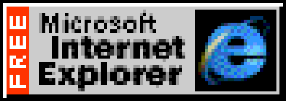

| Name: Yaroslav Penskoi (Ярослав ........) |
| Age: 12 |
| Hobbies: Web Design, old pc, Gaming, and Music |
| Favorite Color: Red |
Hi! I'm Yaroslav, a web enthusiast from the year 2000. I love creating websites with bright colors and fun animations. I started learning HTML and CSS when I was just a kid, and I've been hooked ever since!
When I'm not coding, you can find me playing video games, listening to music, or hanging out with friends. I also enjoy exploring new technologies and keeping up with the latest trends in web development.
If you'd like to get in touch, feel free to email me at: advascriptcc@outlook.com
 Hey! You can download meme with my name!